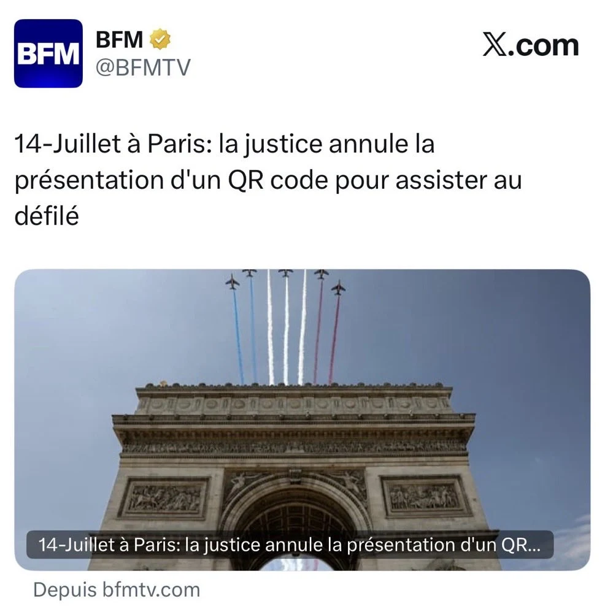

Publication sur X
14 Juillet à Paris. Notre réaction à la première décision sur le QR code
Date de publication sur X · 13 juillet 2026
Repères éditoriaux
Notre publication du 13 juillet réagit à la première décision sur l’accès au défilé. Le lendemain, nous avons relayé sur Facebook le rétablissement du laissez-passer numérique par le Conseil d’État. Les deux publications se lisent dans cet ordre.
Texte de la publication sur X
Le 14 juillet, c’est le peuple qui prend la Bastille et son destin en main.
La justice vient d’annuler le QR code exigé pour assister au défilé. Une fête née de la souveraineté populaire ne se mérite pas sur inscription : elle appartient à toutes et tous. https://t.co/rIoPP3fuCn

Sources
PCF 79 · @79Parti sur X · AR-0005-TW-2076736537203503477
À lire aussi · « Cercle de silence 167 ». La vidéo du rassemblement
Publications associées
- 14 Juillet à Paris, le Conseil d’État rétablit l’exigence du QR code · Suite sur Facebook · rétablissement du dispositif